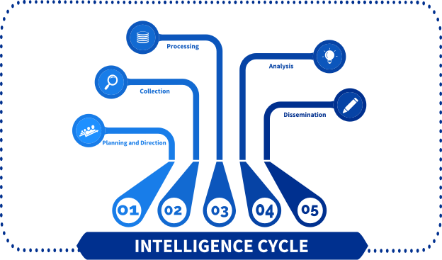
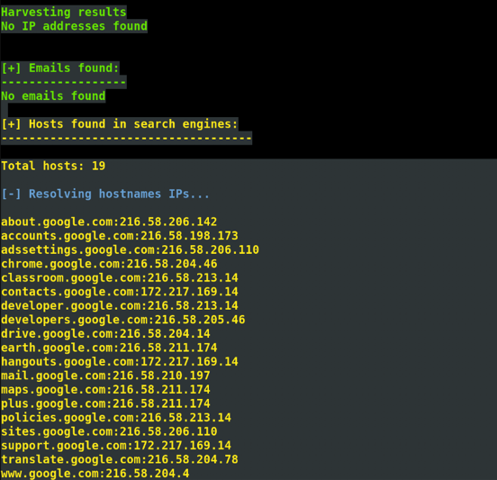
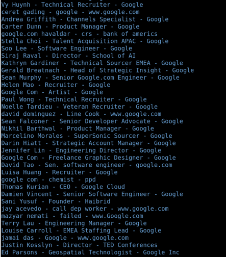
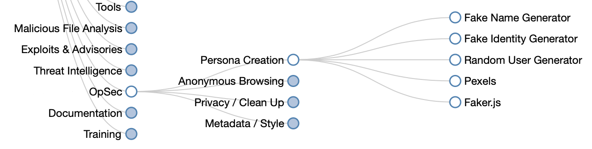
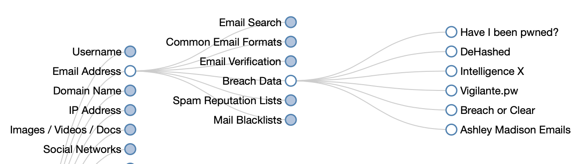
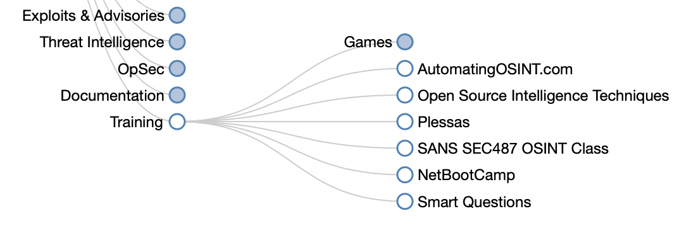
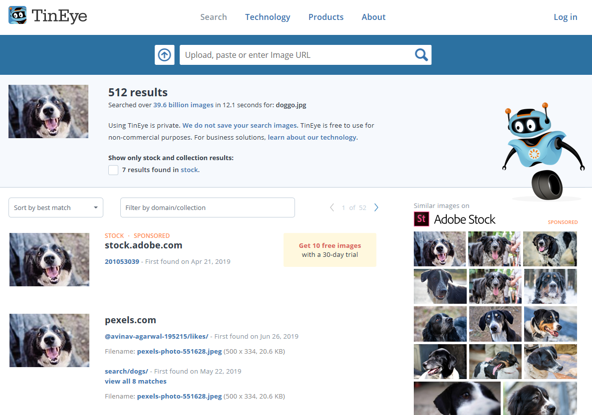
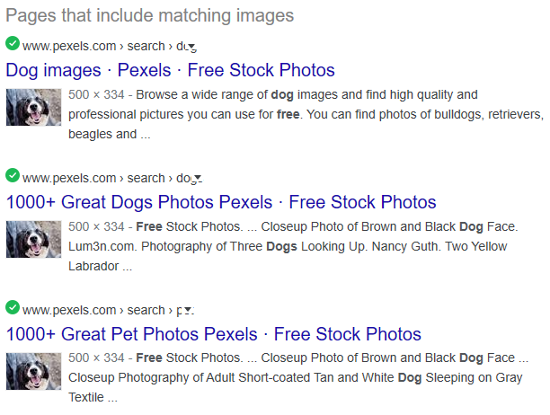

هذا الموقع هو ترجمة وافية ومخصصة لمنهج Introduction to OSINT المعتمد والمقدم من منصة Security Blue Team العالمية.
دورة مقدمة في استخبارات المصادر المفتوحة Introduction to OSINT
يقدّم لك هذا القسم تعريفاً بماهية الـ OSINT، وكيف يمكن أن يكون ذا قيمة لمختلف الفئات والجهات.
ما هو الـ OSINT؟ (What is OSINT?)
مقدمة (Introduction)
الـ OSINT هو اختصار لـ (Open-Source Intelligence) ويَعني "استخبارات المصادر المفتوحة"، وهو عبارة عن بيانات يتم جمعها من مصادر متاحة علناً للجميع للوصول إليها.
يُستخدم الـ OSINT على نطاق واسع في مجالات متعددة مثل:
- إنفاذ القانون (Law Enforcement): التحقيقات الجنائية والأمنية.
- الأنشطة السيبرانية الإجرامية (Cybercrime): مثل التخطيط لشن الهجمات.
- أغراض تسيير أعمال الشركات (Business Operations): مثل مراقبة المنافسين وتحليل السوق.
سيركز هذا المسار التعليمي بشكل أساسي على كيفية تطبيق أدوات وتقنيات الـ OSINT لكل من الفريق الأحمر الهجومي (Red Team) والفريق الأزرق الدفاعي (Blue Team).
أمثلة على بيانات الـ OSINT (Examples of OSINT Data)
صفحات الموظفين العامة:
عندما تمتلك شركة ما موقعاً إلكترونياً عاماً يعرّف ببعض أو كل موظفيها (مثل صفحة "تعرّف على فريقنا"). يمكن للمهاجم استخدام هذه الصفحة بسهولة لجمع قائمة من الأهداف لشن هجمات الهندسة الاجتماعية (Social Engineering). بل إن بعض المواقع قد تتضمن بريداً إلكترونياً أو أرقام هواتف للتواصل، مما يسهل عملية الخداع بشكل كبير.
الأوصاف الوظيفية (Job Descriptions):
الإعلانات الوظيفية التي تُسرّب معلومات عن الأنظمة الداخلية للشركة. (مثال: طلب موظف "مسؤول نظام" يشترط أن تكون لديه خبرة في التعامل مع أنظمة Windows Server 2016 و Solaris). يمكن للمهاجم استغلال هذه المعلومة للتخطيط للهجمات الداخلية، والتحرك الجانبي داخل الشبكة (Lateral Movement)، ورفع الصلاحيات (Privilege Escalation) بمجرد اختراق الشبكة.
الصور على وسائل التواصل الاجتماعي:
الصور التي تحتوي على وسم الموقع الجغرافي (Geotagged) وتتضمن معلومات الجهاز في بياناتها الوصفية (Metadata). (مثال: تلك الصورة الجميلة التي شاركتها أثناء عطلتك؟ يمكننا معرفة مكانها بدقة، غالباً في غضون ثوانٍ، ومعرفة نوع الجهاز الذي التقطتها به).
تحليل الحسابات الشخصية (Social Media Profiling):
قراءة الحساب الشخصي للمستخدم على وسائل التواصل لبناء ملف تعريفي كامل عنه (معلومات مثل: تاريخ الميلاد، الأماكن، الأصدقاء، الاهتمامات، العائلة). يُستخدم هذا لمعرفة المزيد عن الفرد، وهو أمر شائع جداً قبل المقابلات الوظيفية لكي يأخذ أصحاب العمل فكرة عن سلوك الشخص في بيئة العمل.
كشف المجرمين السيبرانيين (Exposing Cyber Criminals):
على الرغم من أن هذا الجزء يدخل في مجال استخبارات التهديدات (Threat Intelligence)، إلا أنه من الممكن استخدام مصادر الـ OSINT ومهارات الهندسة الاجتماعية لتحديد الهوية الحقيقية للمجرمين السيبرانيين وتسليم تفاصيلهم لجهات إنفاذ القانون. ورغم أن هذا الأمر خارج نطاق هذه الدورة المبتدئة، إلا أنه يوضح مدى قوة الـ OSINT عندما يكون في الأيدي المناسبة.
خلاصة (Conclusion)
كما تلاحظ، فإن النقاط المذكورة أعلاه مفيدة لكل من المهاجمين والمدافعين:
- المهاجمون (Attackers): يمكنهم بناء صورة واضحة وقوية عن هدفهم دون الحاجة للتفاعل المباشر مع أنظمته (مما يقلل احتمالية كشفهم).
- المدافعون (Defenders): يمكنهم معرفة حجم ونوع المعلومات المتاحة علناً عن شركتهم على الإنترنت، والعمل على تقليلها أو الحد من مخاطرها باستخدام ضوابط أمنية مثل تدريب الموظفين على الوعي الأمني (User Awareness Training) ووضع سياسات استخدام وسائل التواصل الاجتماعي (Social-Media Policies).
لماذا يُعد الـ OSINT مفيداً؟ (Why is it Useful?)
مقدمة (Introduction)
يمكن للكثير من الأشخاص والجهات الاستفادة من توظيف الـ OSINT. في هذا الدرس، سوف نستعرض مجموعات مختلفة وكيف يمكن لكل منها استغلال المعلومات المتاحة علناً لصالحها.
1. بالنسبة للمدافعين (For Defenders)
من خلال مراقبة وفحص المعلومات المتاحة على الإنترنت، يستطيع المدافعون (خبراء الأمن السيبراني لحماية الشركات) اتخاذ خطوات لتقليل هذه البيانات، أو تطبيق ضوابط أمنية أخرى تمنع الهجمات أو تقلل من فعاليتها.
إذا تمكن المهاجم من بناء ملف تعريفي مفصل عن أحد الموظفين، فقد يكون ذلك خطيراً جداً. ومع ذلك، إذا تلقى هذا الموظف تدريباً أمنياً، فسيكون أكثر قدرة على رصد رسائل البريد الإلكتروني الخبيثة وهجمات الهندسة الاجتماعية.
عندما يقوم المدافعون بإزالة المعلومات المنشورة عبر الإنترنت والتي قد تساعد المهاجم، فإنهم بذلك يقللون من مساحة سطح الهجوم (Attack Surface) — وهي إجمالي النقاط والمسارات التي يمكن للمهاجم استغلالها للوصول إلى الأنظمة الداخلية.
يُطلق على هذا النشاط غالباً اسم تقييمات التعرض العام (Public Exposure Assessments). وتشمل أمثلته:
- جمع المعلومات التي ينشرها الموظفون على وسائل التواصل الاجتماعي.
- تحديد الأجهزة والأنظمة المتصلة بالإنترنت التابعة للشركة (Internet-facing assets).
- إجراء فحص لسجلات الـ DNS.
- العثور على بوابات تسجيل الدخول القديمة أو المواقع المنسية، وغيرها الكثير.
2. بالنسبة لجهات إنفاذ القانون (For Law Enforcement)
تستخدم المنظمات الحكومية وجهاز الشرطة الـ OSINT لتتبع الأشخاص المثيرين للاهتمام، مثل المجرمين، والمشتبه بهم، والإرهابيين.
- بناء الملفات التعريفية (Profiling): هو نشاط يهدف إلى جمع معلومات عن فرد ما لرسم صورة واضحة عن شخصيته وسلوكه. يمكن استخدام ذلك للتنبؤ بمكان تواجدهم في أوقات معينة بناءً على اهتماماتهم ومواقعهم السابقة.
- كشف الهويات: يمكن استخدام الـ OSINT لكشف الهويات الحقيقية للمجرمين السيبرانيين الذين يمتلكون أمناً عملياتياً ضعيفاً (Poor OPSEC) — والـ OPSEC (Operational Security) هو ممارسة إخفاء الهوية الحقيقية عبر الإنترنت وفصلها تماماً عن الشخصية الرقمية المستعارة.
- البحث عن المفقودين: يساعد الـ OSINT في العثور على الأشخاص المفقودين. ومن الأمثلة الرائعة على ذلك منظمة Trace Labs، وهي منظمة غير ربحية تنظم مسابقات الـ OSINT CTF (التقاط العلم) عبر الإنترنت، والتي تعمل فعلياً على تتبع الأشخاص المفقودين ومساعدة أجهزة الأمن في العثور عليهم.
3. بالنسبة للشركات والتجارة (For Businesses)
تستطيع الشركات استخدام الـ OSINT من أجل:
- مراقبة المنافسين ومعرفة تحركات السوق.
- فهم العملاء بشكل أفضل ومعرفة الطريقة الأمثل للتفاعل معهم.
- تحسين العمليات التجارية عبر إثراء البيانات (Data Enrichment).
- مراقبة المخاطر الأمنية مثل البيانات الحساسة أو كلمات المرور المسربة (Leaked Credentials)، أو قيام الموظفين بمشاركة معلومات سرية، أو تخطيط المخترقين لشن هجمات.
وجزء كبير من هذا يتمثل في مراقبة حسابات التواصل الاجتماعي للمنافسين لمعرفة ما يبرعون فيه، واستغلال ذلك لتعزيز استراتيجيات التسويق والتواصل الخاصة بالشركة نفسها.
4. بالنسبة للمهاجمين (For Attackers)
كما أشرنا في الدرس السابق، تُعد مصادر الـ OSINT وسيلة ممتازة للمهاجمين لاكتشاف معلومات حساسة عن الشركة أو الفرد المستهدف.
- التخطيط المسبق: من خلال معرفة الأنظمة والبرامج التي تستخدمها الشركة، يستطيع المهاجم تحديد الثغرات المناسبة وطرق الهجوم مسبقاً.
- الهجمات الموجهة: يمكنهم حصد معلومات الموظفين، مما يسمح لهم بشن هجمات هندسة اجتماعية عالية الفعالية، وحملات بريد إلكتروني اصطيادي موجه (Spear-phishing) مصممة خصيصاً للضحايا لجعلها تبدو حقيقية ومقنعة تماماً.
لذلك، يجب على الشركات الحذر الشديد بشأن المعلومات التي تشاركها أنظمتها وموظفوها على الإنترنت. وتُعرف عملية جمع هذه المعلومات لأغراض خبيثة باسم جمع معلومات الهدف (Target Information Gathering)، أو جمع المعلومات الخامل/السلبي (Passive Information Gathering)؛ وسُمي "خاملاً" لأن المهاجم لا يتفاعل مباشرة مع أنظمة الهدف (مثل فحص المنافذ/البورتات أو فحص الثغرات المباشر)، مما يجعل اكتشافه شبه مستحيل في هذه المرحلة.
الأدوار والوظائف المرتبطة (Associated Roles)
مقدمة (Introduction)
هناك مجموعة واسعة من الوظائف التي تستخدم الـ OSINT بشكل أو بآخر. ولكن بشكل أساسي، يُعد محللو استخبارات التهديدات (Threat Intelligence Analysts)، والباحثون الأمنيون (Security Researchers)، ومختبرو الاختراق (Penetration Testers) هم الأكثر استخداماً للـ OSINT مقارنة بالوظائف الأخرى في مجال الأمن السيبراني.
1. محلل التهديدات التكتيكي (Tactical Threat Analyst)
يقوم محلل التهديدات التكتيكي باستخدام الـ OSINT لإجراء عمليات استخباراتية، وجمع معلومات عن المهاجمين والأعداء الذين قد يستهدفون منظمته أو شركته.
- تتبع المهاجمين: من خلال تتبع الجهات الخبيثة (Malicious actor tracking)، يمكنهم البقاء على اطلاع بأحدث التوجهات والتقنيات التي تستخدمها هذه المجموعات، من أجل بناء خطوط دفاعية ضدها.
- جمع مؤشرات الاختراق: يمكنهم أيضاً جمع مؤشرات الاختراق (IOCs - Indicators of Compromise) من مصادر الـ OSINT، واستخدامها لإجراء فحص داخلي للتأكد من عدم تعرض الشركة للتهديد.
2. محلل التهديدات الاستراتيجي (Strategic Threat Analyst)
يقوم محلل التهديدات الاستراتيجي بإجراء تقييمات للتعرض للتهديدات (Threat exposure assessments)، حيث يعمل على تحديد أي معلومات تقوم المنظمة "بتسريبها" على الإنترنت.
- رصد التسريبات: يشمل ذلك معلومات عن الأنظمة الداخلية، أو الموظفين الذين ينشرون صوراً لبطاقات الهوية (ID cards) الخاصة بالعمل على وسائل التواصل الاجتماعي (والتي يمكن للمهاجمين نسخها وتزويرها لاستخدامها في هجمات الهندسة الاجتماعية)، وغيرها من الحالات التي تتوفر فيها معلومات على الإنترنت قد تساعد العدو.
3. المحلل الأمني (Security Analyst / SOC Analyst)
يستخدم المحللون الأمنيون بيانات الـ OSINT لعدة أسباب، منها:
- فحص السمعة الرقمية: التحقق من سمعة مؤشرات الاختراق (IOCs) مثل عناوين الـ IP (باستخدام مواقع مثل VirusTotal و IPVoid)، أو التحقق من عناوين البريد الإلكتروني وبصمات الملفات (File Hashes) عبر مواقع مثل (VirusTotal و IBM X-Force Exchange).
- التحقيق في الحسابات المزيفة: التحقيق في حسابات وسائل التواصل الاجتماعي المزيفة التي تُستغل لشن هجمات هندسة اجتماعية ضد موظفي الشركة.
4. محلل الثغرات الأمنية (Vulnerability Analyst)
يُعد الـ OSINT جزءاً جوهرياً وحاسماً في هذه الوظيفة. إن البقاء على اطلاع بأحدث الثغرات المعلن عنها للعامة، ومتابعة باحثي الثغرات على وسائل التواصل الاجتماعي، ومشاركة المعلومات، يُعد جزءاً مهماً جداً من العمل الذي يقوم به هؤلاء المحللون.
- مصادر هامة: من المصادر الممتازة للـ OSINT في هذا المجال هي قاعدة البيانات الوطنية للثغرات (NVD - National Vulnerability Database)، واستخدام أدوات مثل TweetDeck لمراقبة منصة X (تويتر سابقاً) لمتابعة الأخبار والإفصاحات المتعلقة بالثغرات الأمنية فور صدورها.
5. مختبر الاختراق / عضو الفريق الأحمر (Penetration Tester / Red Teamer)
يستخدم المتخصصون في الأمن الهجومي (Offensive Security) الـ OSINT للحصول على معلومات حول الشركة المستهدفة، مثل أنظمتها الداخلية وبيانات موظفيها.
- تخصيص الهجمات: تُستخدم هذه البيانات لتصميم هجمات مخصصة بدقة، مما يساعدهم على تقليل "الضجيج" (Noise) أو الآثار التي تتركها أدوات الفحص، ويجعل هجماتهم أكثر عرضة للنجاح، مما يؤدي في النهاية إلى إنجاز تقييم الاختراق بشكل أسرع وأكثر كفاءة.
يقدّم لك هذا القسم دورة العمل الاستخباراتي (Intelligence Lifecycle)، وكيفية تحويل البيانات إلى استخبارات قابلة للتنفيذ.
دورة العمل الاستخباراتي (The Intelligence Cycle)
مقدمة (Introduction)
لا يهم ما إذا كنت فرداً في جهاز إنفاذ القانون أو محللاً أمنياً في شركة، ففي كلتا الحالتين عندما تواجه سيناريو استخباراتياً، ستجد نفسك أمام المشهد ذاته: من جهة، لديك كمية هائلة من البيانات التي يجب تحليلها، ومن جهة أخرى، لديك مشكلة محددة يجب حلها.
للتعامل مع هذا السيناريو، يتعين عليك الاستفادة من كمية البيانات الضخمة المتاحة تحت تصرفك واستخدامها لإعداد تقرير استخباراتي (Intelligence Report) يقدم تفسيراً واضحاً للحلول التي تبحث عنها.
المشكلة الوحيدة هنا هي أن التقارير الاستخباراتية لا تأتي من فراغ؛ لذا لا يجب عليك فقط تحديد كل هذه البيانات، بل يتعين عليك أيضاً تصنيفها وتنظيمها بطريقة تسمح بتحويل هذه "البيانات الخام" إلى "معلومات مفيدة".
وللتعامل مع هذه المواقف، هناك عملية دائمًا ما تُستخدم لبناء المعرفة تُسمى دورة العمل الاستخباراتي (The Intelligence Cycle). يصف هذا النموذج التكراري (Iterative Model) سلسلة من المراحل والإجراءات التي يتعين على الباحث القيام بها لتحويل البيانات والمعلومات التي تم جمعها إلى منتجات استخباراتية قادرة على تقديم حلول للمنظمة.

خطوات دورة العمل الاستخباراتي الـ 5 (The 5 Fundamental Steps)
تتم هذه العملية عبر 5 خطوات أساسية متتالية:
-
1) التخطيط والتوجيه (Planning and Direction):
هذه المرحلة الأولى هي العنصر الحاسم في عملية البحث بأكملها، وهي اللحظة التي تحدد فيها الأفق والاتجاه الذي ستتخذه تحقيقاتك. في هذه الخطوة، تقوم بتحديد الهدف من بحثك ونوع المعلومات الدقيقة التي تبحث عنها. -
2) الجمع (Collection):
في هذه المرحلة الثانية، سيكون هدفك هو تحديد نوع العمليات والأساليب التي ستستخدمها لجمع تلك المعلومات. بعد ذلك، وباستخدام جميع التقنيات والأدوات التي تعرفها، تقوم بـ استخراج وحصد البيانات التي ستساعدك في تنفيذ عمليتك الاستخباراتية. -
3) المعالجة (Processing):
في هذه المرحلة، ستتولى التعامل مع كل ما تم الحصول عليه في خطوة الجمع السابقة. لا يقتصر هدفك هنا على مجرد عرض المعلومات، بل يشمل تطبيق تقنيات فك التشفير (Decoding/Decryption)، والتحقق من الصحة (Validation)، والتقييم (Evaluation). يتيح لك ذلك تصفية وفلترة الكميات الهائلة من المعلومات التي حصلت عليها لتحديد البيانات المفيدة فعلياً لبحثك واستبعاد الضوضاء. -
4) التحليل والإنتاج (Analysis and Production):
هنا يأتي الدور الحقيقي للمحللين لإظهار مهاراتهم. في هذه الخطوة، يجب عليك تجميع ومقارنة كل المعلومات التي قمت بتصفيتها في المرحلة السابقة للوصول إلى حلول للمشكلة الأولية. يشمل ذلك أيضاً صياغة منتج استخباراتي متماسك (مثل: تقرير مكتوب، أو عرض تقديمي/مؤتمر، إلخ) يتيح لك شرح العملية التي قمت بها بوضوح. -
5) النشر والتوزيع (Dissemination):
وأخيراً، نصل إلى الخطوة الأخيرة. هنا يتعين عليك تسليم المنتج الاستخباراتي الذي طورته طوال العملية إلى أصحاب المصلحة (Stakeholders) —سواء كانوا أفراداً أو مجموعات— الذين طلبوا هذا البحث في المقام الأول. يساعد هذا المنتج هؤلاء المسؤولين على اتخاذ قرارات مدروسة ومناسبة بناءً على معلومات دقيقة لحل المشكلة الأصلية.
خلاصة:
هذا كل ما يتعلق بدورة العمل الاستخباراتي. الآن أصبحت تعرف النموذج والنظام الذي يجب اتباعه لإدارة أي عملية استخباراتية بنجاح من البداية وحتى النهاية.
يناقش هذا القسم كيفية تتبعنا جميعاً عبر الإنترنت، وكيف يمكننا تقليل بصمتنا الرقمية.
التتبع عبر الإنترنت (Online Tracking)
مقدمة (Introduction)
هناك فكرة شائعة وخاطئة في مجتمع الأمن السيبراني تقول بأن عمليات الـ OSINT مخفية تماماً، وأنه لن يشعر بك الشخص أو المنظمة التي تحقق بشأنها بأي حال من الأحوال. ولهذا السبب تُسمى هذه التحقيقات بـ "العمليات الخاملة/السلبيّة" (Passive operations).
ومع ذلك، الشيء الذي يجب أن تعرفه وتدركه عند هذه النقطة هو أنه لا يوجد شيء خاص أو سري على الإنترنت. فمنذ اللحظة التي تفتح فيها محرك البحث الموثوق لديك، يقوم متصفحك بإرسال معلوماتك إلى المواقع التي تزورها.
في النهاية، في كل مرة تتفاعل فيها مع متصفحك (سواء بالدخول إلى موقع أو تحميل ملف)، فإنه يرسل حزمة صغيرة من المعلومات عن نفسه؛ هذه البيانات لا تسمح للموقع فقط بمعرفة الإعدادات المناسبة لعرض الصفحة بشكل صحيح على شاشتك، بل هي بيانات يمكن استخدامها أيضاً لتحديد هويتك بدقة.
بصمة المتصفح الرقمية (Fingerprinting)
هل تتذكر تلك المرة التي قمت فيها بزيارة منتج أو مقال في متجر إلكتروني، ثم ذهبت بعدها لتصفح حساباتك على وسائل التواصل الاجتماعي لتفاجأ بإعلان لنفس المنتج يظهر أمامك على الشاشة؟
هذا لا يحدث لأن الإنترنت يعلم الغيب! بل يحدث لأنه —كما ستفهم الآن— هناك برمجيات يمكنها التعرف على "الآثار الصغيرة" (Little traces) التي تتركها وراءك أثناء تصفحك. تُستخدم هذه البرمجيات عادةً لملاحقتك عبر المواقع التي تزورها لبناء نموذج رقمي يساعد الشركات على فهم اهتماماتك وتقديم توصيات مخصصة لك (إنهم عملياً يعرفون من أنت، وماذا تحب، وأين كنت طوال الوقت).
هذه "الآثار الصغيرة" قد لا تمثل مشكلة للشخص العادي، ولكن تخيل كيف يمكن أن تؤثر على عملك كمحقق OSINT يحاول البقاء مخفياً عن أهدافه؟ ستكون كارثة حقيقية!
فهي لن تنبه الهدف بوجودك وبأن هناك من يبحث عنه فحسب، بل قد تسمح له أيضاً باستخدام تلك "الآثار" لمعرفة هويتك الحقيقية، مما يضعك في دائرة الخطر.
دعنا ننتقل فوراً إلى قائمة هذه الآثار الرقمية التي تُعرف باسم البصمات (Fingerprints):
1. عناوين الـ IP (IP Addresses)
أجل! إن الشيء الذي يسمح لنا بالتواصل عبر الإنترنت هو نفسه الشيء الذي يفضحنا ويشي بنا.
فكما تعلم، في كل مرة تستخدم فيها الإنترنت، يتم إرسال عنوان الـ IP العام الخاص بك (Public IP) عبر جهاز الراوتر. هذا العنوان لا يتيح لك التواصل مع الموقع فحسب, بل يخبر الموقع أيضاً بمن يجب أن يتصل به للرد عليه، وإلى أين يرسل البيانات، والوقت المستغرق للوصول إلى هذا العنوان.
ونحن نعلم أنك تدرك بأن عنوان الـ IP هو أكثر شيء مكشوف وعلني على الإنترنت، لدرجة أن الكثير من المواقع لا تهتم حتى بتخزينه. ولكن، رغم ذلك، يجب أن تذكر دائماً أن هذا العنصر الصغير قد يكون أول خيط يكشف هويتك للهدف.
2. ملفات تعريف الارتباط (Cookies)
"هل تود قطعة كعك (Cookie) يا عزيزي؟" هذا هو السؤال الذي تجده دائماً بشكل غير مباشر أثناء تصفحك للإنترنت. والسبب هو أن جميع المواقع اليوم تقريباً تستخدم هذه الملفات لتعمل بشكل "مثالي وسلس للمستخدم".
تقوم الكوكيز بحفظ معلومات تسجيل الدخول الخاصة بك، وإعداداتك المخصصة، وحتى تذكر المنتجات التي وضعتها في سلة التسوق. ولكن بعض هذه الملفات هي السبب الرئيسي في جعل المواقع تعرف عنك أكثر مما ينبغي، وتُعرف بـ "ملفات ارتباط الطرف الثالث الدائمة" (Third-party persistent cookies) أو (Tracking cookies - كوكيز التتبع).
تُخزن هذه الملفات على القرص الصلب (Hard Drive) لجهازك، وتهدف إلى جمع معلومات حول نشاطك، وإرسال هذه البيانات إلى الموقع الذي زرعها في جهازك لمساعدته على معرفة ميولك واهتماماتك.
من أشهر المنصات والمواقع التي تستخدم هذا النوع من كوكيز التتبع:
- Doubleclick (التابعة لجوجل والإعلانات)
- وغيرها الكثير...
3. بصمة المتصفح (Browser Fingerprinting)
وأخيراً، نصل إلى البصمة التي يتم إنشاؤها رقمياً من خلال المتصفح نفسه. هذا العنصر هو الأكثر خطورة وتطفلاً على الإطلاق.
عبارة عن سجلات ومعلومات يجمعها الموقع مستغلاً مجموعة واسعة من البيانات المتاحة على جهاز الكمبيوتر الخاص بك، والتي يرسلها متصفحك تلقائياً ليخبر المواقع عن الإعدادات التي تستخدمها، ونوع الجهاز الذي تعمل عليه، إلخ.
وينتج عن هذا دمج البيانات لإنشاء مُعرِّف فريد وخاص بك (Unique identifier) يسمح بتمييز جهاز الكمبيوتر الخاص بك عن ملايين الأجهزة الأخرى حول العالم.
يحتوي هذا المعرّف (البصمة) على معلومات دقيقة مثل:
- إصدار المتصفح الذي تستخدمه بدقة.
- نظام التشغيل (Operating System) الذي تتصفح منه حالياً.
- دقة أبعاد الشاشة (Screen resolution).
- أنواع الخطوط (Fonts) المفعّلة على جهازك في الوقت الحالي.
كل هذه التفاصيل مجتمعة تجعل تصفحك الخاص أو الخفي (Incognito) غير ذي قيمة تقريباً في منع التتبع؛ لأن بصمة جهازك تظل فريدة وثابتة.
ملاحظة دراسية:
توجد مواقع شهيرة تُستخدم لاختبار المتصفح ومعرفة حجم البيانات التي تسربها ومدى قدرة المواقع على تتبعك (مثل موقع AmIUnique أو Cover Your Tracks)، وهي تتيح لك تقييم مستوى "خفائك وأمنك" أثناء التصفح.
إخفاء الهوية وتجهيل البيانات (Anonymization)
مقدمة (Introduction)
بعد ما قرأته للتو، لا بد أنك تسأل نفسك: "ولكن، إذا كنت في كل مرة أستخدم فيها الإنترنت مضطراً لإعطاء معلومات للموقع الذي أدخل إليه، فكيف يمكننا الحديث عن ميزة خفاء الهوية؟"
والحقيقة أنه لا يمكننا التحدث عن خفاء تام، لأنه لا يمكنك أبداً أن تكون مخفياً بنسبة 100% أثناء استخدام الإنترنت. ومع ذلك، هذا لا يعني أنه لا يمكنك استخدام بعض التقنيات والأدوات التي تجعلك تبدو كشخص آخر، بحيث لا تتمكن شبكات التواصل الاجتماعي أو الشركات الكبرى (مثل Google) من معرفة هويتك الحقيقية أثناء تصفحك.
لتحقيق ذلك، كل ما تحتاجه هو أن تكون واعياً بالعناصر التي ذكرناها سابقاً، وأن تقوم بتثبيت بضع أدوات تساعدك على أن تكون أكثر حماية وأمناً من بقية المستخدمين العاديين.
1. إضافة طبقات حماية إضافية (Add Extra Layers)
قبل أن نتحدث عن أن أفضل ما يمكنك فعله هو استخدام VPN أو شبكة TOR، من الجيد أن تتعرف أولاً على فوائد الأجهزة الافتراضية (Virtual Machines - VMs)، وكيف أنها لا تساعدك فقط في تشغيل أنظمة تشغيل وهمية، بل تمنحك أيضاً طبقة خصوصية إضافية قوية لنشاطاتك.
يذكر أحد أشهر خبراء الـ OSINT عالمياً (Michael Bazzell) في كتابه الشهير "Open-Source Intelligence Techniques" أن أفضل ممارسة يمكن لمحققي الـ OSINT القيام بها هي:
استخدام نظام تشغيل Linux (سواء عبر فلاشة USB كنظام حي Live ISO أو باستخدام جهاز افتراضي VM)، وإجراء البحث كاملاً، ثم مسح كل أثر لك بمجرد إعادة تشغيل النظام (إما بالعودة لنقطة استعادة نظام "Snapshot" أو عبر الـ USB الحي).
بهذه الطريقة، لن تكتفي بإنجاز بحثك والحصول على المعلومات التي تحتاجها فحسب، بل ستقوم أيضاً بمحو أثرك تماماً؛ لأن أي سجلات (Logs) قد تكون وُجدت على النظام سيتم حذفها فوراً بمجرد إعادة التشغيل.
ولهذا الغرض، يمكنك استخدام أنظمة جاهزة ومخصصة للـ OSINT مثل:
- Trace Lab OSINT VM (نسخة نظام جاهزة ومخصصة).
- أو بناء توزيعة Linux الخاصة بك للـ OSINT (تجدون دليلاً ممتازاً لبنائها بنفسك في روابط المنصة).
2. إخفاء عنوان الـ IP العام (Hide Your Public IP Address)
كما تعلم جيداً، فإن عنوان الـ IP الخاص بك هو "الوجه" الذي تظهر به أمام عالم الإنترنت، وهو أول شيء تستقبله الأجهزة الأخرى عند التواصل معك.
لذلك، فإن استخدام أداة لتغيير الـ IP هو قرار سيساعدك على حماية هويتك على الإنترنت، ويسمح لك بالتصفح بخصوصية أكبر. يمكنك استخدام أدوات مثل متصفح TOR Browser أو شبكة VPN.
الشبكات الافتراضية الخاصة (VPN - Virtual Private Networks):
تُعد الـ VPN أداة أساسية لأي شخص يريد إجراء تحقيق استخباراتي؛ فهي لا تخفي عنوان الـ IP الخاص بك عن الغرباء فحسب، بل تضيف أيضاً طبقة تشفير (Encryption) لكل اتصالاتك وبياناتك المارة عبر الشبكة، مما يساعد بشكل كبير في الحفاظ على خصوصيتك.
3. إضافات المتصفح هي الحل! (!Extensions For The Win)
من النصائح الممتازة لتقليل كمية المعلومات التي تجمعها المواقع عنك هي تثبيت إضافات (Extensions) متخصصة في حظر هذه الأنشطة. هذا سيغلق الباب تقريباً أمام المواقع لتتبعك أو تشغيل أكواد وسكربتات غير مرغوب فيها على جهازك.
إليك أبرز الإضافات الموصى بها في مجال الـ OSINT واستعراض وظائفها التوضيحية بصرياً:

User-Agent Switcher and Manager: تقوم بتزييف وتغيير نص الـ "User-Agent" الخاص بمتصفحك، لتوهم الموقع بأنك تدخل من متصفح أو نظام تشغيل آخر تماماً.

No Script: تمنع تشغيل ملفات الجافا سكريبت (JavaScript) والفلاش وغيرها من الإضافات البرمجية، وتسمح بها فقط للمواقع الموثوقة التي تختارها بنفسك.

Privacy Badger: تمنع الشركات الإعلانية وملفات تتبع الطرف الثالث من تعقبك سراً ومعرفة المواقع والصفحات التي تزورها.

uBlock Origin: تقوم بفلترة وحظر الإعلانات تماماً، وتمنع متصفحك من تحميل واستعراض المحتوى التسويقي والدعائي.

Cookie AutoDelete: تقوم بحذف ملفات تعريف الارتباط (Cookies) غير المرغوب فيها تلقائياً من التبويبات بمجرد إغلاقها، مع الحفاظ على الكوكيز التي تريدها فقط.
4. الحسابات الوهمية / دمى الجوارب (Sock Puppetry)
وأخيراً، أفضل طريقة للفصل التام بين شخصيتك الحقيقية وشخصيتك الرقمية هي استخدام ما يُعرف بـ دمى الجوارب (Sock Puppets). هذه الحسابات هي الصديق المقرب لفرق الاستخبارات والتحقيق.
باختصار، الـ Sock Puppets هي شخصيات مستعارة (Alter-egos) يتم إنشاؤها وتصميمها خصيصاً لتنفيذ أنواع مختلفة من المشاريع أو التحقيقات.
الهدف منها: أن تكون بمثابة هوية مزيفة بالكامل تتيح لك التواصل مع الأشخاص الخاضعين للتحقيق، أو تصفح وجمع معلومات الـ OSINT من منصات التواصل الاجتماعي دون ربطها بحساباتك الشخصية الحقيقية بأي شكل من الأشكال لحمايتك وحماية عائلتك.
يقدّم لك هذا القسم عدداً من أدوات الـ OSINT الواقعية ويوضح لك كيفية استخدامها.
أداة (The Harvester)
مقدمة (Introduction)
أداة The Harvester هي أداة سطر أوامر (Command-line) مخصصة لجمع المعلومات (Information-gathering). تستخدم الأداة مصادر الـ OSINT المتنوعة لحصد بيانات حول النطاق المستهدف (Domain)، وتقوم باستخراج معلومات بالغة الأهمية مثل: أسماء المضيفين (Hostnames)، وعناوين الـ IP، وأسماء الموظفين (ومناصبهم الوظيفية)، وعناوين البريد الإلكتروني، وغيرها الكثير.
مثال عملي 1: فحص النطاق عبر محرك البحث Google
في المثال الأول، نقوم بإجراء استطلاع بسيط (Reconnaissance) على النطاق Google.com باختيار محرك البحث "Google" كمصدر للبيانات، عبر الأمر التالي:
شرح مكونات الأمر:
- theharvester: استدعاء الأداة وتشغيلها.
- -d google.com: تحديد النطاق المستهدف (Target domain).
- -l 100: تحديد الحد الأقصى للنتائج المسترجعة بـ 100 نتيجة فقط (List 100 results max).
- -b google: تحديد مصدر جمع البيانات، وهنا اخترنا محرك بحث جوجل (Source = google).

النتيجة: لم يمنحنا هذا الفحص الكثير من المعلومات الحساسة، ولكن معرفة عناوين الـ IP المرتبطة بالنطاقات الفرعية (Subdomains) لشركة جوجل يُعد أمراً مفيداً جداً للمرحلة التالية.
مثال عملي 2: فحص الموظفين عبر منصة LinkedIn
الآن لنحاول تجربة شيء مختلف قليلاً؛ إذا كنا نريد شن هجمات هندسة اجتماعية ضد بعض موظفي شركة Google، فيمكننا التعرف بسرعة على الأهداف المحتملة من خلال تغيير مصدر البيانات ليصبح منصة LinkedIn بدلاً من Google، وذلك باستخدام الأمر التالي:
(تلاحظ أنه تم تغيير الخيار بعد -b إلى linkedin ليصبح هو المصدر المطلوب).

النتيجة: أصبح لدينا الآن قائمة بالأهداف المحتملة (الموظفين)، بالإضافة إلى مسمياتهم الوظيفية (Job titles) داخل الشركة.
الخطوات التالية في السيناريو الهجومي
بعد الحصول على أسماء الموظفين ومناصبهم، يمكننا القيام بالآتي:
- إجراء المزيد من الاستطلاع حولهم باستخدام منصة LinkedIn نفسها بشكل مباشر.
- بناء ملف تعريفي كامل (Profiling) لكل موظف باستخدام أدوات متقدمة مثل Maltego.
- شن هجمات تصيد مُوجّه (Spear-phishing attacks) كجزء من محاكاة التهديدات الحقيقية (Threat Simulation Engagement) لاختبار دفاعات الشركة!
نصيحة تطبيقية للدراسة
قم بتجربة أداة The Harvester باستخدام نطاقات مختلفة (Domains) ومصادر بيانات متنوعة. يمكنك استعراض ملف المساعدة الخاص بالأداة لمعرفة كافة الخيارات المتاحة والمصادر المدعومة عبر كتابة الأمر التالي في سطر الأوامر:
theharvesterسيوضح لك هذا الأمر جميع مصادر البيانات المتاحة (مثل Shodan, Bing, Censys) والمتغيرات الأخرى التي تساعدك في استخراج بيانات محددة بدقة.
أداة مالتيجو (Maltego)
مقدمة (Introduction)
امتداداً لأسلوب عمل أداة The Harvester، ننتقل الآن إلى أداة OSINT قوية للغاية تدعى Maltego.
أداة Maltego هي أداة متقدمة لتعدين البيانات (Data mining) وجمع المعلومات، وتتميز بقدرتها على جلب بيانات في الوقت الفعلي (Real-time data) حول أنواع مختلفة من الكيانات (مثل: الشركات، الأشخاص، المواقع الإلكترونية، وغيرها). تقوم الأداة بتمثيل هذه البيانات رسومياً عبر عُقد (Nodes)، لتوضح لك بصرياً جميع الروابط والاتصالات التي تمكن البرنامج من العثور عليها عبر الإنترنت حول الهدف الخاضع للتحقيق.
ملاحظة: لشرح هذه الأداة، سنستخدم نظام التشغيل Kali Linux، حيث تأتي الأداة مدمجة بشكل افتراضي ضمن مجموعة أدوات "جمع المعلومات" (Information Gathering).
خطوات تشغيل الأداة (Getting Started)
- تشغيل البرنامج: لتشغيل Maltego، يمكنك ببساطة كتابة الأمر
maltegoفي سطر الأوامر (Terminal)، أو البحث عنها عبر شريط تطبيقات Kali Linux. - اختيار النسخة: عند بدء التشغيل، ستلاحظ وجود 5 نسخ مختلفة من البرنامج (بعضها مدفوع والآخر مجاني). في هذه الدورة سنختار النسخة المجانية وهي Community Edition (CE)، وهي كافية تماماً للتعلم والدراسة.
- الإعداد الأول: بعد اختيار النسخة، كل ما عليك فعله هو الموافقة على شروط الترخيص، وإنشاء حساب مجاني (ستتلقى بعده مفتاح API يسمح لك باستخدام البرنامج)، ثم ضبط الإعدادات المفضلة لديك.
- فتح مساحة العمل: بمجرد الانتهاء، اختر خيار "Open a blank graph" (فتح مخطط فارغ) لتبدأ بالعمل، وستظهر لك شاشة مساحة العمل الرسومية.
تجهيز أدوات التحويل (Setting up Transforms)
لإجراء أول عملية بحث لك، يجب عليك تفعيل مصادر البيانات وتسمى في البرنامج بـ التحويلات (Transforms):
- اذهب إلى تبويب Transforms ثم اضغط على Transform Hub.
- سيظهر لك كتالوج يحتوي على أدوات التحويل المتاحة للتثبيت.
- لأغراض هذا المثال، قم بتثبيت الأدوات التالية:
- CaseFile Entities
- HaveIBeenPwned? (لفحص تسريبات البريد الإلكتروني)
- Social Links CE (للبحث في وسائل التواصل)
- Shodan (محرك بحث الأجهزة المتصلة بالإنترنت - يتطلب منك إنشاء حساب مجاني على موقع shodan.io لجلب مفتاح الـ API الخاص بك وضبطه في الأداة).
البدء بالفحص العملي (Running a Scan)
بعد تثبيت الأدوات، ارجع إلى المخطط الفارغ الذي أنشأته.
مِن القائمة الجانبية التي تسمى Entity Palette، ابحث عن كيان يسمى Domain (نطاق).
قم بسحب أيقونة الـ Domain وإفلاتها داخل مساحة العمل البيضاء.
(في هذا المثال، سنقوم بفحص النطاق paterva.com؛ وهي الشركة المطورة لبرنامج Maltego والتي تمنح الإذن دائماً لإجراء هذا النوع من الفحص التعليمي).
اضغط بزر الفأرة الأيمن (Right-click) على الكيان الذي أضفته، ثم اضغط على السهم بجانب "All transforms" لبدء عملية الفحص الشامل. (إذا كانت هذه مرتك الأولى، ستظهر لك نافذة لإخلاء المسؤولية اضغط موافق).
النتيجة والتحليل (The Result)
بمجرد اكتمال الفحص، سيقوم البرنامج تلقائياً برسم مخطط بياني (Graph) يربط النطاق بالخوادم، وعناوين الـ IP، والبريد الإلكتروني، وأسماء النطاقات الفرعية التي عثر عليها عبر الإنترنت.
أنت الآن جاهز تماماً لاستخدام Maltego! ابدأ باستكشاف وظائفه وتحليل العلاقات بين البيانات، فالباقي يعتمد على مهاراتك التحليلية.
ملاحظة دراسية:
إذا كنت ترغب في التعمق أكثر في هذا البرنامج، يمكنك زيارة الرابط الرسمي المرفق في المنصة للاستفادة من الشروحات التعليمية (Tutorials) التي توفرها شركة Maltego.
اختراقات البحث عبر جوجل (Google Dorks)
مقدمة (Introduction)
يُعد محرك البحث جوجل مفيداً جداً بشكل عام، ولكن Google Dorks هي عبارة عن "حيل أو خبايا بحثية" (Search hacks) نستخدم فيها صيغاً ومتغيرات خاصة ضمن خانة البحث العادية في جوجل للعثور على معلومات دقيقة ومحددة جداً.
تأتي صيغة الـ Dork دائماً على شكل: الكلمة المفتاحية:الأداة (operator:keyword)، ومثال على ذلك: filetype:pdf.
تشمل الأمثلة الواقعية لاستخدام الـ Dorks ما يلي:
- استخراج ملفات معينّة من نطاقات (Domains) محددة.
- العثور على صفحات ويب مخفية وبوابات تسجيل دخول سرية.
- حصر واكتشاف النطاقات الفرعية (Subdomain Enumeration).
- وغيرها الكثير!
1. العثور على الملفات (Finding Files)
دعنا نبدأ برؤية كيف يمكننا العثور على ملفات PDF مرتبطة بالأمن السيبراني، باستخدام صيغة البحث التالية:

النتيجة: في لقطة الشاشة أعلاه، نلاحظ أن البحث قد أظهر بالفعل جميع ملفات PDF التي تحتوي على الكلمتين "cyber" و"security". يمكننا استخدام هذه المعلومات لمعرفة الملفات التي تستضيفها الشركة على الإنترنت، والتحقق مما إذا كان أي منها سريًا ولا ينبغي إتاحته للعامة. كما يُمكن استرجاع معلومات حول الأنظمة الداخلية والمستخدمين من خلال الاطلاع على بيانات الملفات الوصفية لمعرفة تاريخ إنشائها وهوية من أنشأها. ويمكن أيضًا استخدام المستندات لإنشاء قوائم كلمات مخصصة لهجمات كلمات المرور ضد مؤسسات محددة. جرّب ذلك بنفسك باستخدام مصطلح بحث أو نطاق (مثل Facebook.com filetype:pdf)..
كيف يستغلها المحقق أو المهاجم؟
يمكننا استخدام هذا الأسلوب لمعرفة الملفات التي تستضيفها شركة معينة على موقعها، والتحقق مما إذا كان أي منها سرياً ولا ينبغي للعامة الوصول إليه. كما يمكن أيضاً استخراج معلومات عن الأنظمة الداخلية والمستخدمين من خلال فحص البيانات الوصفية (Metadata) لهذه الملفات لمعرفة تاريخ إنشائها ومن قام بإنشائها. بالإضافة إلى ذلك، يمكن استخدام هذه المستندات لإنشاء قوائم كلمات مرور مخصصة (Custom wordlists) لاستخدامها في هجمات التخمين ضد منظمات معينّة.
تلميح للتطبيق: جرب هذا بنفسك مع أي نطاق تريده مثل: site:Facebook.com filetype:pdf
2. حصر النطاقات الفرعية (Subdomain Enumeration)
الآن دعنا نرى كيف يمكن استخدام الـ Dorks لحصر واكتشاف جميع النطاقات الفرعية التابعة لنطاق رئيسي، وذلك لأغراض الاستطلاع الخامل (Passive Reconnaissance). سنأخذ موقع فيسبوك كمثال باستخدام الصيغة التالية:
شرح الأمر:
- site:Facebook.com: ابحث عن أي موقع ينتهي بـ Facebook.com.
- -site:www.Facebook.com: علامة السالب (-) تعني (استبعد)، أي استبعد الموقع الرئيسي المعروف www.

النتيجة: ستظهر لك قائمة تبدأ بنطاقات فرعية مثل portal.facebook.com و code.facebook.com. لقد قمنا بحصر النطاقات الفرعية بنجاح!
تُعد هذه الطريقة ممتازة للتعرف على صفحات الويب غير الشائعة التي قد تحتوي على بوابات تسجيل دخول أو معلومات قيمة مثل بيئات التطوير والمبرمجين (Development environments)، والملفات، وغيرها.
3. البحث باستخدام الكلمات المفتاحية في الروابط (Keyword Searching)
باستخدام أداة البحث inurl: (والتي تعني: ابحث داخل الرابط)، يمكننا البحث عن كلمات مفتاحية محددة تظهر في رابط الموقع (URL) بشكل أكثر دقة من البحث التقليدي.
إذا استخدمنا الصيغة التالية:
ستظهر لنا العديد من الصفحات التي تبدو كأنها بوابات لتسجيل دخول المدراء والمسؤولين (Admin login portals).
أهمية هذا الفحص:
- للمهاجم (Attacker): إذا كان هذا ضمن نطاق العمل المصرح به، يمكنه محاولة اختراق هذه البوابات عبر هجمات التخمين (Brute-force) أو تخطي بوابة تسجيل الدخول للوصول إلى لوحة تحكم المدير.
- للمدافع (Defender): يمكنه العمل فوراً على تأمين وحماية هذه البوابات أو إخفائها حتى لا يتم اختراقها.

خلاصة (Conclusion)
كما أصبحت تعلم الآن، فإن الـ Google Dorks أدوات قوية وفعالة للغاية. من المهم جداً الاطلاع على القوائم الموسعة لهذه الأوامر المتاحة على الإنترنت (مثل موسوعة Google Hacking Database - GHDB)، وتجربة بعضها بنفسك لتفهم تماماً كيف تعمل وكيف يمكن توظيفها في الحماية الدفاعية أو الهجوم في الأمن السيبراني.
الدفاع ضد الـ Google Dorks (Defending Against Google Dorks)
مقدمة (Introduction)
لقد عرفنا أن الـ Google Dorks يمكن أن تكون قوية وصادمة للغاية؛ فقد تكشف عن بوابات تسجيل دخول المدراء، وأسماء المستخدمين وكلمات المرور، وكاميرات المراقبة المتصلة بالترنت (IP Cameras)، وغيرها الكثير. ولكن كيف نحمي أنفسنا ومؤسساتنا منها بدقة؟
1. تحديد الموقع الجغرافي والقوائم البيضاء للعناوين (Geofencing and IP Whitelisting)
هناك طرق عديدة للتحكم والتقييد بناءً على عناوين الـ IP لمنع المستخدمين غير المصرح لهم، أو حتى لمنع عناكب وجامعي بيانات جوجل (Google Crawlers) — وهي برامج تبحث في الإنترنت وتؤرشف كل صفحة عامة ومتاحة تجدها في طريقها.
- تحديد الموقع الجغرافي (Geofencing):
هي طريقة لحظر نطاقات IP كاملة مرتبطة بدول معينة، بحيث لا يُسمح بالوصول إلى الموقع إلا من مواقع جغرافية محددة.
مثال: إذا أرادت شركة في بريطانيا السماح بالاتصال بموقعها من داخل بريطانيا فقط، يمكنها فعل ذلك. ولكن هل ترى الثغرة الأمنية هنا؟ إذا كان هناك شخص في أمريكا ويستخدم شبكة VPN مضبوطة على خادم في بريطانيا، فسيتمكن من تخطي هذا الحظر والدخول للموقع. (وهذا ما تفعله منصة Netflix لمنع المستخدمين من مشاهدة محتوى دول أخرى، حيث أصبحت تحظر اتصالات الـ VPN والبروكسي تماماً). - القوائم البيضاء للعناوين (IP Whitelisting):
تعمل بطريقة مشابهة ولكنها أكثر صرامة؛ حيث تسمح فقط لعناوين IP محددة مسبقاً بالوصول إلى الموقع، وتطرد أي عنوان آخر.
تُعد هذه الطريقة ممتازة إذا كان لديك بيئة تطوير برمجية (Development environment) أو موقع تحت الإنشاء متصل بالإنترنت ولا تريد لأحد أن يراه. يمكنك إضافة نطاق الـ IP العام الخاص بشركتك فقط إلى القائمة البيضاء، وبالتالي لن يتمكن أي شخص من خارج الشركة (بمن فيهم محركات البحث) من رؤية الموقع أو أرشفته.
2. قيود برامج الزحف والأرشفة (Crawler Restrictions)
من أكثر الطرق فعالية لمنع ظهور محتويات موقعك الحساسة على جوجل هي منع عناكب الزحف (Crawlers) الخاصة بجوجل من الوصول إليها أساساً.
ويمكن تحقيق ذلك بسهولة عبر إنشاء ملف نصي صغير في الموقع يُسمى robots.txt. هذا الملف يخبر محركات البحث بالصفحات التي يُسمح لها بأرشفتها والصفحات الممنوعة.
مثال على محتوى الملف:
Disallow: /
User-agent: *تعني أن هذا الأمر ينطبق على جميع عناكب البحث (جوجل، بينغ، إلخ).Disallow: /تعني يُمنع منعاً باتاً أرشفة أو الدخول إلى أي مجلد أو صفحة في هذا الموقع (مثل مجلدات الصور/images/أو التدريب/training/).
3. طلب إزالة المحتوى من جوجل (Requesting Content Removal)
اگر قمت بإجراء فحص باستخدام الـ Google Dorks على شركتك، ووجدت نتائج حساسة يمكن استغلالها من قِبل المخترقين (مثل ملفات سرية أو بوابات دخول)، يمكنك تقديم طلب رسمي لشركة Google تطلب منهم إزالة هذا الرابط من محرك بحثهم.
- الإزالة المؤقتة: توفرها جوجل لمدة (90 يوماً) لحين قيامك بسد الثغرة أو حذف الملف من خادمك.
- الإزالة الدائمة: لإخفاء الرابط تماماً من الفهرس.
شرط أساسي: يجب أن تقدم لجوجل إثباتاً كافياً وملكية موثقة تبين أنك صاحب الموقع (عبر Google Search Console) ليتم قبول طلب الإزالة. (تجد الرابط الرسمي لتقديم هذه الطلبات في منصة الدراسة).
إطار عمل الـ OSINT (OSINT Framework)
مقدمة (Introduction)
يُعد هذا الموقع الإلكتروني بمثابة مستودع ومركز تجمّع ومحور رئيسي لمئات من مصادر وأدوات الـ OSINT المختلفة. يتميز الموقع بتصنيفه الشجري المبتكر والمبسط الذي يتيح للمحقق العثور على الأداة التي يحتاجها بسرعة فائقة بناءً على نوع البيانات المراد البحث عنها (مثل: البريد الإلكتروني، الحسابات، الأجهزة).
يمكنك زيارة الموقع والاطلاع على تصنيفاته عبر الرابط: osintframework.com
أبرز حالات الاستخدام العملية للإطار:
- هجمات الهندسة الاجتماعية وبناء الشخصيات (Social Engineering & Persona Creation):
عند الرغبة في إنشاء شخصية مزيفة (Fake Persona) لشن هجمات هندسة الاجتماعية أثناء مهام الفريق الأحمر ومحاكاة الهجمات (Red Team Engagement) لصالح شركتك؛ نتوجه لفرع الأمن العملياتي (OpSec) ثم اختيار (Persona Creation). يزودنا الموقع بروابط لأدوات تساعد في بناء ملف تعريفي كامل ومقنع للشخصية الوهمية بشكل واقعي، بدلاً من تأليف تفاصيل عشوائية قد تكشف هويتك. - فحص تسريبات البريد الإلكتروني للهدف (Email Address Breaches):
لمعرفة ما إذا كان البريد الإلكتروني للهدف قد تسرّب في أي اختراق سابق للبيانات (Data Breach)؛ نتوجه إلى فرع (Email Address) ثم الفرع الفرعي (Data Breach). تتيح هذه الخطوة معرفة ما إذا كانت كلمات المرور الخاصة بالهدف قد سُربت علناً على الإنترنت المظلم لاستغلالها لاحقاً في هجمات التخمين أو الاختراق دون الحاجة لتعميق كبير في استخبارات التهديدات. - تعزيز مهارات ومعارف الـ OSINT (Training):
يقدم الموقع خيارات ومصادر ممتازة لتدريب وتطوير مهارات المحققين المتاحة تحت فرع التدريب (Training) لاستكشاف مصادر إضافية وتطوير المعرفة الأمنية.



أداة تين آي (TinEye)
مقدمة (Introduction)
شركة TinEye هي شركة متخصصة في البحث عن الصور والتعرف الرقمي عليها وتتبعها. تقدم الشركة لعملائها ميزة تلقي تنبيهات (Alerts) فور العثور على صورهم الشخصية أو التجارية منشورة على الإنترنت.
لماذا يُعد هذا الأمر مفيداً؟
- للفرق الأمنية (Security Blue Team): إذا بدأ أشخاص آخرون بنشر شعار شركتنا (Logo)، فقد يعني ذلك أن هناك من ينتحل صفتنا ويستخدم هويتنا البصرية ليمنح نفسه مصداقية زائفة لخداع الضحايا.
- للصور وصناع المحتوى: يفيدهم ذلك في مراقبة حقوق الملكية ومنع مشاركة صورهم دون إذن رسمي مسبقاً.
بعيداً عن خدمة التنبيهات المدفوعة التي تقدمها الشركة، يمكن لأي شخص استخدام موقع TinEye مجاناً لإجراء البحث العكسي عن الصور (Reverse Image Search)؛ حيث نقوم برفع صورة معينة لمعرفة أين تم نشرها واستخدامها في مواقع أخرى عبر الإنترنت.
كيفية استخدام TinEye (Using TinEye)
- توجه إلى الموقع الرسمي: tineye.com
- ستظهر لك خانة بحث تمنحك خيارين: إما رفع صورة من جهازك (Upload)، أو لصق رابط (URL) لصورة مرفوعة ومستضافة على الإنترنت.
- في هذا المثال: سنقوم برفع صورة عادية لكلب (Stock image). من المتوقع بالطبع أن تظهر لنا نتائج كثيرة جداً نظراً لطبيعة الصورة العامة وأنها متداولة.
- النتيجة: بعد اكتمال البحث، تظهر لنا شاشة النتائج مبينة أن هذه الصورة الدقيقة تم العثور عليها في 512 مكاناً مختلفاً على الإنترنت، من بين إجمالي 39.6 مليار صورة تمت معالجتها وفحصها في وقت قياسي استغرق 12.1 ثانية فقط.


حالات الاستخدام في التحقيقات (Investigation Use Cases):
1. كشف الحسابات المزيفة على وسائل التواصل الاجتماعي:
عند قيام المخترقون أو المحتالون بإنشاء حسابات وهمية على وسائل التواصل الاجتماعي، فمن المستبعد جداً أن يستخدموا صورة شخصية حقيقية أو فريدة؛ بل غالباً ما يبحثون في جوجل عن "مولدات الصور الشخصية" أو يسرقون صورة عشوائية.
يمكن كشف هذه الحسابات بسهولة عبر خطوتين:
- بالنظر: غالباً ما تبدو الصور مصطنعة (لا أحد يبتسم بتلك المثالية في الحقيقة).
- تطبيقياً عبر TinEye: نقوم برفع الصورة الشخصية للحساب المشبوه لمعرفة مدى انتشارها.
تحليل النتائج:
- الحسابات الحقيقية الطبيعية تعطي عادةً ما بين 0 إلى 10 نتائج (بناءً على مدى حب صاحب الصورة لنشرها في منصات مختلفة).
- إذا قمنا بالبحث العكسي وظهرت لنا مئات أو آلاف النتائج، فهذا يمثل راية حمراء وتحذيراً فورياً (Red flags).
- نقوم بعدها بفحص المواقع التي تظهر فيها الصورة؛ فإذا وجدنا أنها مأخوذة من مواقع بيع الصور (Stock photo sites) أو ما شابه، نتأكد حينها بنسبة كبيرة أن الحساب مزيف ويستخدم صورة شخص آخر.
ملاحظة: لا ينطبق هذا على الصور الشخصية فقط، بل إذا كان الحساب ينشر صوراً يومية عامة، يمكننا فحصها؛ فمن المستحيل علمياً أن يلتقط شخصان صورتين متطابقيتن تماماً بالصدفة، وبالتالي فإن وجود أي تطابق للصور يعني أن الحساب يسرق محتوى الآخرين وهو حساب مشبوه.
2. مراقبة سمعة العلامة التجارية (Brand Reputation Monitoring):
على الرغم من وجود طرق مؤتمتة وأكثر تقدماً للقيام بذلك، إلا أنه باستخدام خدمة تنبيهات TinEye Alerts، يمكن للشركات تلقي إشعار فور رصد أي صورة أو شعار (Logo) مملوك لها على الإنترنت. يُعد هذا الإجراء ممتازاً لمراقبة حماية العلامات التجارية المسجلة وقضايا الملكية الفكرية، ومنع استغلالها في حملات التصيد الاحتيالي (Phishing).
البحث عن الصور عبر جوجل (Google Image Search)
مقدمة (Introduction)
تتشابه أداة البحث عن الصور من جوجل بشكل كبير جداً مع أداة TinEye؛ حيث تتشاركان في الوظيفة الأساسية وهي "البحث العكسي عن الصور".
للبدء، كل ما عليك فعله هو التوجه إلى الرابط التالي: images.google.com حيث يمكنك وضع رابط (URL) لصورة معينة، أو رفع الصورة يدوياً من جهازك. وفي هذا الدرس، سنقوم بتجربة رفع نفس صورة الكلب (Stock photo) التي استخدمناها في درس TinEye السابق للمقارنة بين الأداتين.
تحليل نتائج البحث عبر جوجل (Analyzing the Results)
بمجرد رفع الصورة، سيعرض جوجل نتائج مذهلة وتحليلات متقدمة بناءً على الصورة المرفوعة:
- التعرف الذكي على محتوى الصورة وسياقها:
في الجزء العلوي من صفحة النتائج، تظهر الصورة داخل شريط البحث بجانب عبارة "free dog" (كلب مجاني). هذه العبارة لم نكتبها نحن، بل قام محرك بحث جوجل بتوليدها تلقائياً بعد تحليل محتوى الصورة، وفحص صفحات الويب التي تتوفر فيها، ودراسة الكلمات المفتاحية الأكثر استخداماً لوصف هذا المحتوى عبر الإنترنت. - حجم النتائج الضخم وقاعدة البيانات:
قام جوجل بالبحث في جميع الصفحات المؤرشفة لديه عن الصورة المرفوعة، وأظهر لنا ما يقارب 2,910,000,000 نتيجة! وهذا يوضح الفارق الضخم في حجم قاعدة البيانات بين جوجل وأي منصة أخرى. - التطابقة الكاملة (Complete Matches):
عند التمرير إلى أسفل صفحة النتائج، سيعرض لك جوجل قائمة دقيقة بجميع صفحات المواقع الإلكترونية التي تتضمن تطابقات كاملة ومطابقة تماماً للصورة التي تبحث عنها.
أهمية هذه الأداة في الـ OSINT
تتميز أداة جوجل عن TinEye في قدرتها على فهم سياق الصورة (Context)؛ فجوجل لا يبحث عن البكسلات المتطابقة فحسب، بل يحلل الكلمات المكتوبة بجوار الصورة في المواقع الأخرى. يساعدك هذا كمحقق OSINT على:
- معرفة الاسم الحقيقي لصاحب الصورة إذا كانت مسروقة، من خلال العبارات التوضيحية المكتوبة عنها.
- الوصول إلى الحسابات الأصلية للأشخاص على منصات تواصل أخرى تستخدم نفس الصورة ولكن بأسماء مستعارة مختلفة.

يتضمّن هذا القسم تحدي الدورة الختامي، حيث ستضع مهاراتك على المحك!
ملخص تحدي الـ OSINT النهائي (OSINT Challenge Brief)
مقدمة (Introduction)
مرحباً بك في التحدي النهائي لمسار "مقدمة في الـ OSINT"! نأمل أن تكون قد استمتعت بالمحتوى التعليمي حتى الآن، ولكن حان الوقت الآن لوضع مهاراتك قيد الاختبار الفعلي. في هذا التحدي، سيتعين عليك تحقيق ثلاثة أهداف رئيسية:
- تحديد أي حسابات على وسائل التواصل الاجتماعي أو مواقع إلكترونية يستخدمها الشخص المثيرة للاهتمام (Person-of-interest).
- بناء ملف تعريفي شامل (Profile) عن هذا الشخص.
- العثور على أي أدلة تثبت تورطه في سلوك إجرامي أو خبيث.
سيناريو التحدي (Challenge Scenario)
أنت تعمل لصالح جهة إنفاذ قانون (جهاز أمني/شرطة)، وتم تكليفك بتتبع شخص مثير للاهتمام يُعتقد أنه مرتبط بمجموعة اختراق إلكتروني (Hacking group) قامت مؤخراً باختراق مزود خدمات مدارة (MSP - Managed Service Provider)، وتحاول هذه المجموعة الآن بيع بيانات الاعتماد وكلمات المرور المسروقة على الإنترنت العام (Clear Net) والإنترنت المظلم (Dark Web).
هناك فريق آخر يركز حالياً على تتبع خيوط الإنترنت المظلم، ولذلك تم تكليفك أنت باستخدام مصادر الـ OSINT لبناء ملف تعريفي عن هذا الفرد، ومحاولة تحديد موقع أي دليل يربطه باختراق الـ MSP وعملية بيع تفاصيل الحسابات المسروقة.
لقد تم تزويدك ببعض المعلومات البسيطة كخيط بداية لتحقيقك. يمكنك استخدام أي من المصادر أو الأدوات التي تدرّبت عليها في هذه الدورة والتي تراها مناسبة ومطبقة على الحالة. (نحن نعلم مسبقاً أن البريد الإلكتروني المستخدم لتسجيل حساب تويتر هو بريد مزيف، لذا لا تشغل نفسك به ولا تضمنه في تقريرك).
تنبيه: هذا السيناريو خيالي بالكامل. وأي تشابه بين شخصية السيناريو وأي شخص حقيقي في الواقع هو مجرد صدفة بحتة.
موارد ومعطيات التحدي (Challenge Resources)
لقد زودك مديرك بمعلومة البداية التالية فقط:
اسم حساب تويتر (Twitter handle) الخاص بالمخترق: @sp1ritfyre
يمكنك تحميل ملف نصي يحتوي على قائمة بالمعلومات المطلوب منك استخراجها عن الهدف (SBT-OSINT-Challenge-Report.txt). يجب عليك استخدام هذا الملف لمساعدتك في العثور على البيانات الصحيحة، وتجهيزها لتسليمها في درس "تقديم التحدي" القادم. سيساعدك هذا الملف على البقاء في المسار الصحيح وعدم جمع معلومات غير ذات صلة بالتحقيق الحالي.
نصائح وإرشادات هامة للحل (Tips and Advice)
- اقرأ نموذج التقرير جيداً: قم بقراءة ملف قوالب التقرير بدقة لتعرف المعلومات المطلوبة منك تحديداً، وتجنب الهدر العشوائي للوقت أو الضياع في تفاصيل جانبية لا فائدة منها (Rabbit-holes).
- احذر الاختراق غير المصرح به: لا تحاول أبداً الحصول على وصول غير مصرح به (Unauthorized access) لأي مواقع أو حسابات تظهر لك في هذا التحدي، لأن ذلك غير قانوني. فالـ OSINT يعتمد فقط على استخراج البيانات المتاحة علناً أو كلمات المرور المسربة دون تفاعل هجومي مباشر. قد تواجه صفحات محمية بكلمات مرور وهي داخل نطاق العمل، لا تقم بمهاجمتها بل ابحث عن تسريباتها علناً.
- سجلات الـ DNS: يمكن استخدام سجلات الـ DNS TXT records لعرض نصوص برمجية أو رسائل مخفية. لا تنسَ فحص سجلات النطاق الخاص بالهدف للتحقق مما إذا كان المالك أو المخترق قد ترك تعليقاً أو دليلاً هناك!
- التشفير والترميز: قد تكون بعض المعلومات مشفرة أو مكوّدة بصيغ مثل Base64 أو Hexadecimal (النظام الست عشري) حتى لا تكون مقروءة للبشر مباشرة. يمكنك استخدام مواقع الإنترنت (مثل CyberChef) لفك تشفيرها بعد تمييز نصوصها.
- طلب المساعدة: إذا واجهت صعوبة أو تعثرت في الحل، يمكنك مناقشة زملائك الطلاب في سيرفر الديسكورد الخاص بالمنصة، وتحديداً في قناة
#i2-OSINT(ولكن تذكر، يُمنع حرق الحلول أو إعطاء إجابات مباشرة لأن ذلك يخالف قوانين المجتمع!).
معايير النجاح والتخرج
يتطلب اجتياز التحدي الحصول على نسبة 80% كحد أدنى في الاختبار العملي، مع إتمام تقدم الدروس بنسبة 100% للمطالبة بشهادة التخرج وإتمام أولى خطوات مسار محلل الفريق الأزرق المبتدئ (Blue Team Junior Analyst Pathway) بنجاح.
تسليم تحدي الـ OSINT (OSINT Challenge Submission)
إرشادات الاختبار (Quiz Instructions)
يرجى التأكد من قراءتك لملخص التحدي في الدرس السابق جيداً لتعتاد على سيناريو التحقيق وتعرف بدقة المعلومات التي يتعين عليك جمعها قبل البدء في تسجيل الإجابات.
يرجى مراعاة المعلومات الهامة التالية المتعلقة بالاختبار وآلية التسليم:
- محاولات مفتوحة (Unlimited Attempts): يمكنك إعادة محاولة حل الاختبار والإجابة على الأسئلة لعدد المرات الذي ترغب فيه دون أي قيود، فالهدف الأسمى هو التعلم واكتساب الخبرة العملية.
- لا توجد تلميحات (No Hints): كما هو الحال في جميع التحديات والنهائيات الحاسمِة في مسار الأمن السيبراني، لا تقدم المنصة أي تلميحات للحل. إذا تعثرت في أي خطوة، تفاعل مع زملائك الطلاب في سيرفر الديسكورد عبر قناة
#i2-OSINTلمناقشة الخيوط دون حرق الإجابات. - نسبة النجاح والتخرج (Passing Score): تحتاج إلى الحصول على نسبة 80% على الأقل لاجتياز هذا الاختبار العملي بنجاح. وتذكر أنك بحاجة إلى إتمام التقدم في الدورة بنسبة 100% لتستحق شهادة الإتمام الرسمية وتظهر في حسابك الشخصي.
رسالة تشجيعية
استمتع برحلة التحقيق الرقمي، خذ وقتك كاملاً دون استعجال، وطبّق كافة المهارات والأدوات (مثل Google Dorks, Maltego, TinEye, The Harvester) التي تعلمتها طوال هذه الدورة للوصول إلى الحقيقة! بالتوفيق لك في تحديك الأول.